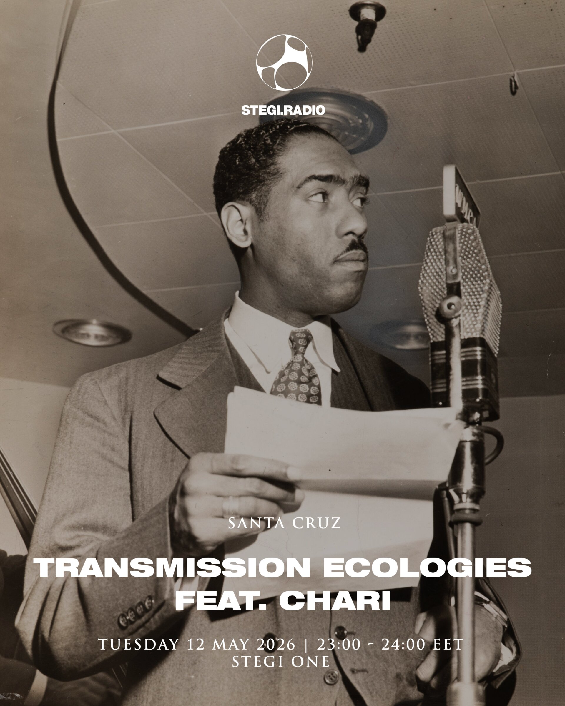

TRANSMISSION ECOLOGIES
Back
STEGI.RADIO: TRANSMISSION ECOLOGIES
12.05.2026
WITH RESIDENT: Afroditi Psarra
WITH GUESTS: CHARI
This work draws from archival recordings of New World A-Coming, a 1940s radio program created by Roi Ottley and produced by WMCA and the City-Wide Citizens’ Committee of Harlem. The original broadcasts featured first-person accounts of African American life during World War II, addressing racial discrimination, labor inequality, military service, and everyday experiences in Harlem.
In this piece, the recordings are played in reverse and mixed live, with fragments introduced, layered, and withdrawn through faders. Voices, music, and ambient sound are recombined in real time, producing a shifting composition built from excerpts of the archive. The work draws on the traditions of musique concrète, as well as DJ culture and remix practices, where recorded sound is treated as material for transformation.